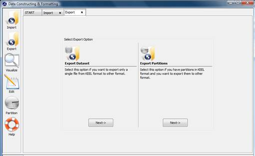
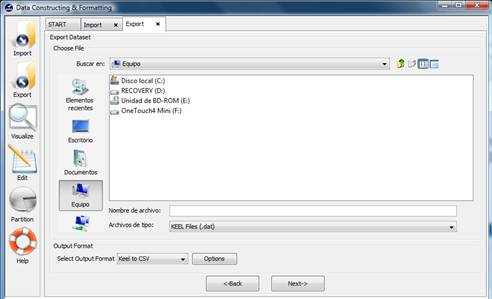
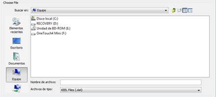
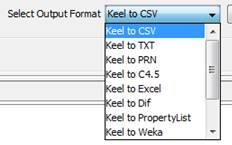
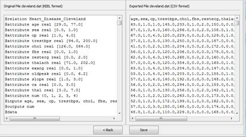
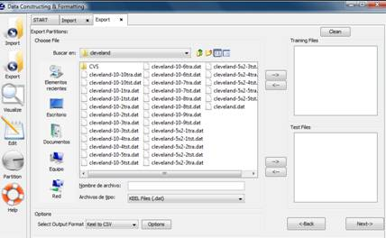
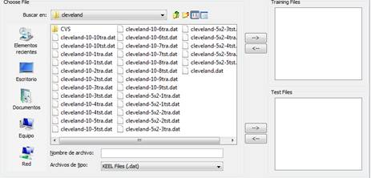

Figure 5. Specify certain options of format of destination file.
DATA EXPORT
Data export allows you to transform the datasets in KEEL format to the desired format (txt, excel, xml, html table, etc.).

Figure 1. Two possibilities to carry out the export process.
Figure 1 shows the two possible options to export data sets. One option consists of exporting one data set, the other option consists of exporting a set of partitions which you have available in other formats different to KEEL format. In continuation, we show the process of two options.
Option 1: Export Dataset. Select this option if you want to export only a single file from KEEL format to other format (see Figure 2).

Figure 2. Export Dataset option.
This option consists of the next parts:
Step1: Select the source file. First of all, the path of source file must be specified (a browser commonly known from many other GUI programms is used to define this path).

Figure 3. Specify the source file path.
Step2: Select Input Format. After choosing the file, you must select the format of destination file. The formats admitted are CVS, TXT, PRN, C4.5, Excel, Dif, PropertyList and Weka. The different options are shown in Figure 4.

Figure 4. Format admitted to convert from KEEL format.
The "Options" button allows you to configure if it is necessary a certain separator and null value used in the source file.
Figure 5. Specify certain options of format of destination file.
Step 3: Save the files. Once the type of conversion and path of file have been configured, you must click Next button and then, the original and the exported file are shown (see Figure 6).

Figure 6. Previsualization of original and exported file.
If we agree with the conversion done, you click the Save button and you can select the destination directory for the transformed dataset.
Option 2. Export Partitions. Select this option if you have previously performed partitions in KEEL format and you want to export them to other format. This option allows to select a set of training and test files separately. Figure 7 shows the window with respect to this option.

Figure 7. Export Partitions option.
This option consist of the next parts:
Step1: Select the source files. First of all, the path of source file must be specified . You have to use the arrows to include the files in training or test properly.

Figure 8. Specify the source file paths.Step2: Select Input Format. After choosing the file, you must select the type of conversion. The format admitted are CVS, TXT, PRN, C4.5, Excel, Dif, PropertyList and Weka. The different options are shown in Figure 9.
Figure 9. Format admitted to convert to KEEL format.
The "Options" button allows you to configure if it is necessary a certain separator and null value used in the source file.
Figure 10. Specify certain options of format of destination file.
Step 3: Save the files. Once the type of conversion and path of file have been configured, you must click Next button and the original and the exported file are shown (see Figure 11).
Figure 11. Previsualization of original and exported file.
If we agree with the conversion done, you click the Save button and you can select the destination directory for the transformed dataset.